In the summer of 2014, I was a part of an incredible team whose vision was to revolutionize the payment industry in South America. I was easily convinced by PayClip's ambition to solve real problems, their impact and the sheer amount of technical challenges in the payment space.
At the heart of Silicon Valley, I had the opportunity to meet and learn from the very best. The experience was the best learning experience I've ever had. I ended up being all over the place from design to development with full ownership to three major projects at PayClip in a short three months interval.
Every project that I worked on was written using the technology stack that I truly believe in - Open Web. I consider myself very lucky in that aspect. I spent a large amount of time designing and building architectures and features.
I used quick prototyping approach followed by a lot of refactoring and testing. I mades sure I had a lot of development cycles, where I refactored almost half the entire codebase in less than two weeks. I could literally feel the evolution of my code from the first iteration to the final production code.
I can go and describe the many technical challenges I faced during my internship, but the lessons I learnt were the most valuable thing ever. I ended up going to many hackathons, meetups, talks and recreational events which included - snakes, biking, football, food, and more food - during my short stay in the Bay Area.
It is something special to be part of an organization whose sole mission is to promote openness, innovation and opportunity in the web. Being a Mozilla Rep has provided me the perfect platform to motivate myself to collaborate and contribute to the Mozilla Community.
I have always been a strong advocate of the Open Web. I'm mostly involved with Mozilla by either writing code, volunteering in events, helping local communities or encouraging people to contribute. And also, I drove around the US to raise awareness about Mozilla and it's mission.
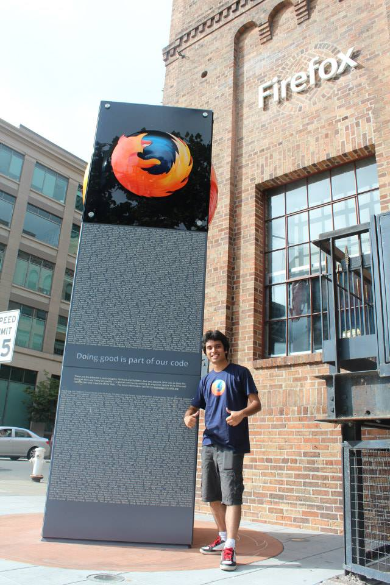
Mozilla gives you the feeling of doing good and being a part of an amazing community of technologists, innovators and doers. It perfectly fits my lifetime goal to improve lives of as many people as possible and make the world a better place. I'm proud to be part of Mozilla and contribute in anyway I can.
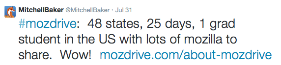
My craziest project with Mozilla was undoubtedly traveling around the United States to share the true story about Mozilla and committing to publish an ebook.
I believe I have the coolest non-job on the planet where I am either collaborating, organizing Webmaker activities, attending the largest gathering of Makers or discussing future plans to support Mozilla initiatives in North America.
You feel you are part of this global movement where everyone is working to advance the state of the web and keeping it open.
The internship at MIC was a special treat to my long term goal to foster innovation and growth in local communities in Nepal. I consider myself super lucky to be able to contribute both as a facilitator and developer in my short period as an intern.
The time I spent at MIC was a mix of creating things, motivating students, promoting technology and having fun. I was able to ship multiple projects, and also fascilitate talks to promote open web in Microsoft technologies.
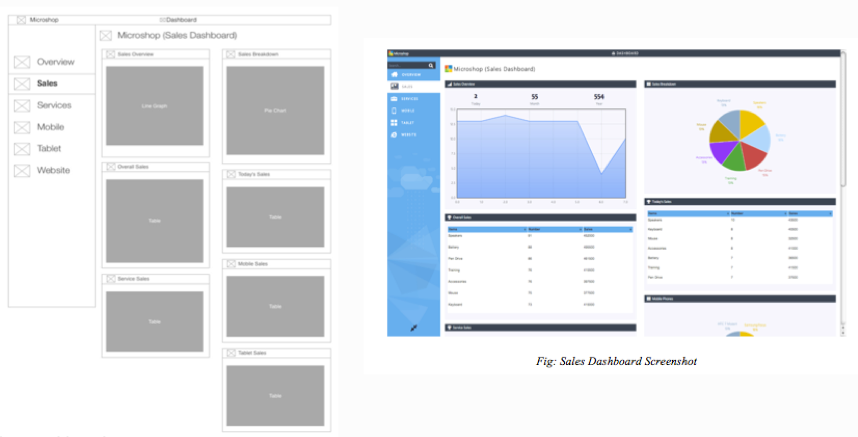
I took ownership in building a Dashboard framework that was real-time, reusable, flexible and used the latest cutting edge technology. It was built such that any team could setup their own dashboard environment using this framework.
We were able to ship Nepali-English date converter App in both Windows 8 and Windows Phone platforms. The date converter was later ported to JavaScript and released as open-source. It was then used for various other apps like Nepali Calender. A public Web API was also built from it.
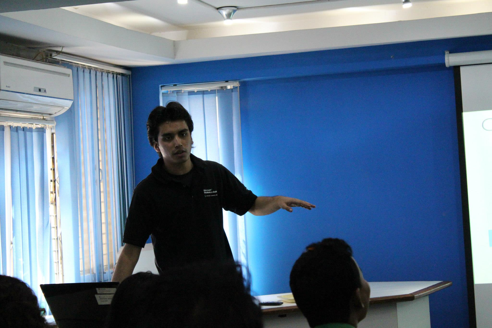
I was responsible to fascilitate three 5-day sessions to build Microsoft Office Apps using the open web technologies. Hundreds of Office Apps were built by students during the training sessions. I was also part of GWAB (Global Windows Azure Bootcamp) team to faciliate and spread the word of cloud computing in Kathmandu region.
fortystones was a brain-child of five freshmen engineering students to set ourselves a platform to grow and share our knowledge to the world. Our amatur platform later touched lives of over 550,000 people across 216 countries and 12,000 cities worldwide.
From writing articles, tutorials and reviews to building श्री, we, as young students, tried to make a tiny-winy impact in the world. No matter what happened, I am extremely happy that fortystones was an invaluable part of my undergraduate life.
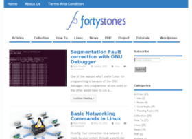
We are on this planet for a reason and the interconnectivity of the web creates the opportunity to help create a better society. We understood this early, and hence the web saw the birth of a small initiative called - fortystones.
The basic idea was to set a platform for ourselves where we could share our knowledge and information with the world. Each post was called a stone and each stone was ‘engraved’ with information that we found interesting or fun.
We weren’t professionals by any means and we never considered ourselves experts in a field. We were just a bunch of guys determined to learn and share. And so we did.
I have always been fascinated by information and social networking. Scoop was an experiment to play around with both of them during my undergraduate days.
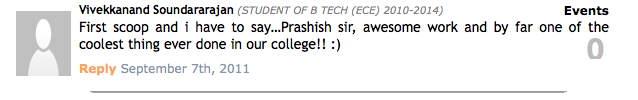Scoop was a platform for students to share any information, trending news, articles or stories within the university. This was before time when facebook was 'the thing' and groups weren't omnipresent. Pushing emails to everyone isn't ideal if you want to share focused news. Scoop solved this.
Shrii was built less as a hobby project and more as a desire to build something that I regularly use. Instead of using just-another-transliterate, I and @rabi_shah decided to build a phonetic translator that converts English text to देवनागरी script.
The result? It was used by thousands of people, forked and used in other Nepali applications.
Graph Database was completely developed out of curiosity of the then new concept of NoSQL Graph databases esp. Neo4j. The curiosity turned out to be so strong that I decided to try to make one instead.
Given the timeframe and experience, it was quite an ambitious project as our first mini-project, but we eventually did publish a paper, and the paper was cited by some other papers (I, II) too. :)
Think of Siri without voice commands. That's what we tried to build in our seventh semester. Again, without any experience in Natural Language Processing, we dived into this topic totally out of curiosity to do something new and exciting.
The idea was to build a system that would understand and respond to a user's question. It involved understanding the semantic of a sentence, which was in the form of natural English language, by various tools, then querying into an ontology for the necessary result and forming a response to the user.
The idea behind this project was to use the concept of Semantic Web for obtaining interoperability between hospitals for extraction and collection of useful medical data.
In a short few months, we were able to build a complete semantic web infrastructure, play with real hospital data and also, publish a paper.
I’m a learner. I love to explore, learn new things in life and create. I learned early to be optimistic on any life events and always take positives from them.
I am a good son, student, teacher, volunteer, entrepreneur, chief, motivator, explorer, technologist, reader and foodie. I want to be everything else that I have not yet been.
I am constantly learning and trying to be better than my yesterday. I love to have a curious mind and to look at thing from a different perspective. My work ethic mantra would be - Work Smart, Honesty and Responsibility.
One of the ulterior goals of my life is to make a difference in this world by creating things that brings values to others. And while I take daily actions and pursue my passions to accomplish this goal, I’ll also continue my inner quest to understand life, explore this world, and stay curious.
Create. Motivate. Live everyday.
Did I tell you that I traveled to 40 US State in 25 days to raise awareness about Mozilla and the Open Web? I don't consider myself an avid traveler but I'm love exploring new cities.
I like impromptu weekend plans.
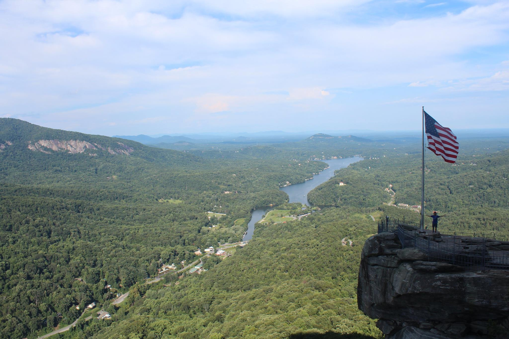41 / 50 US States
I like the whole idea of being part of communities of passionate people working selflessly towards a common goal.
We used to organize monthly meetups for PHP Devs in Kathmandu Valley. We did organize few casual hackathons as well.
We also organized the first ever Developers' Meet Nepal where the focus was to gather all professionals and enthusiasts from all major tech communities in Nepal.
 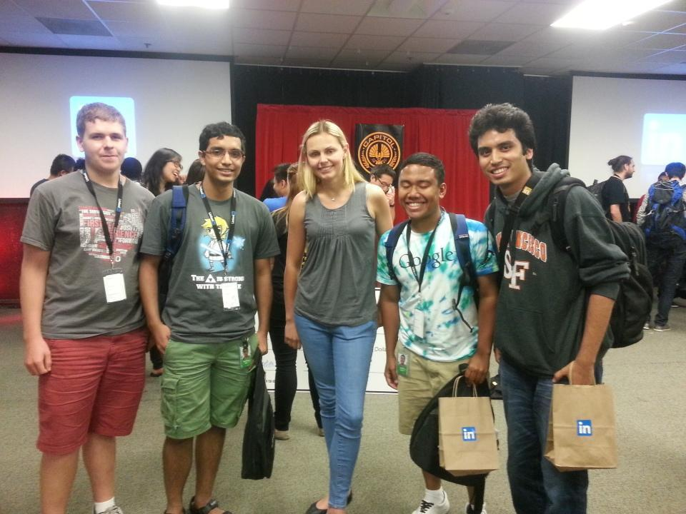
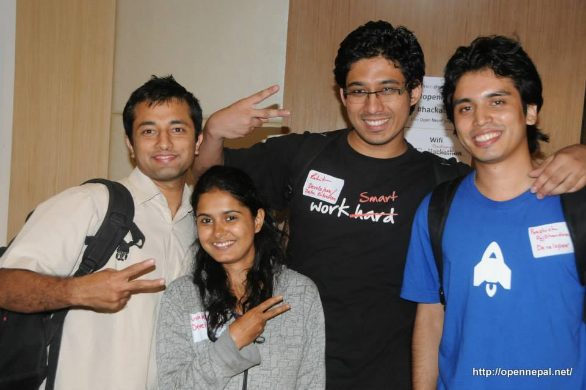
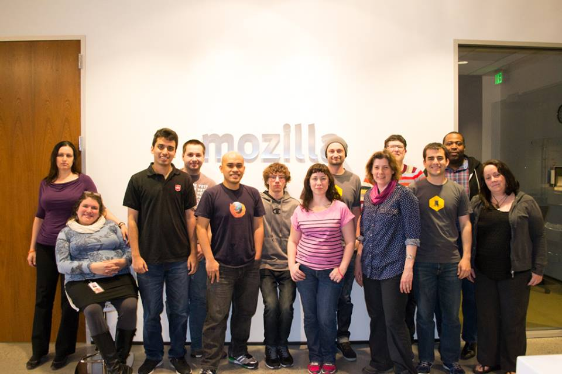
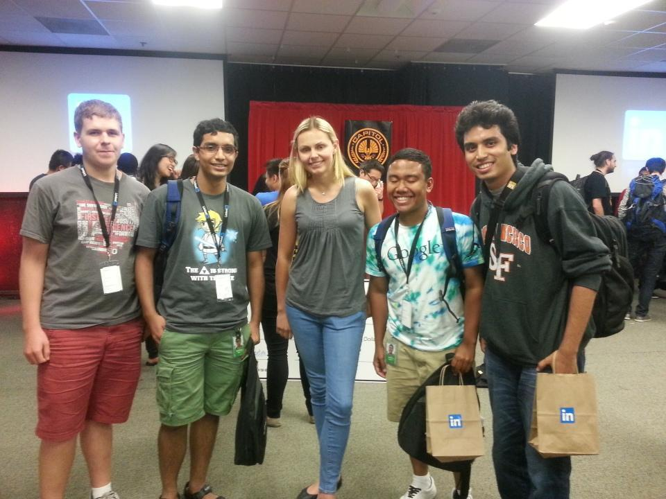
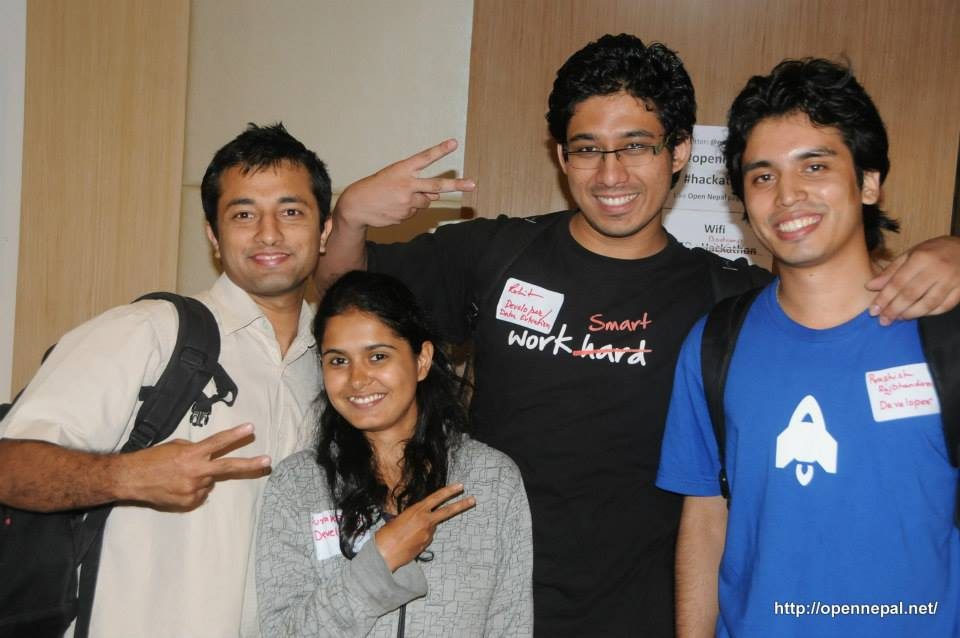
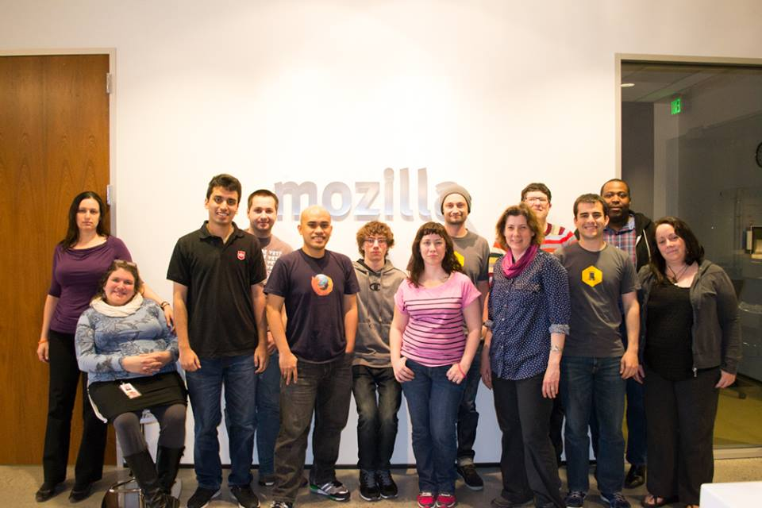
I love experimenting in the kitchen. I've even tried to open-source my recipes with my a self-claimed series - Be Your Own Master Chef (BYOMC) Series. I consider cooking as one of small things in life that I appreciate doing.
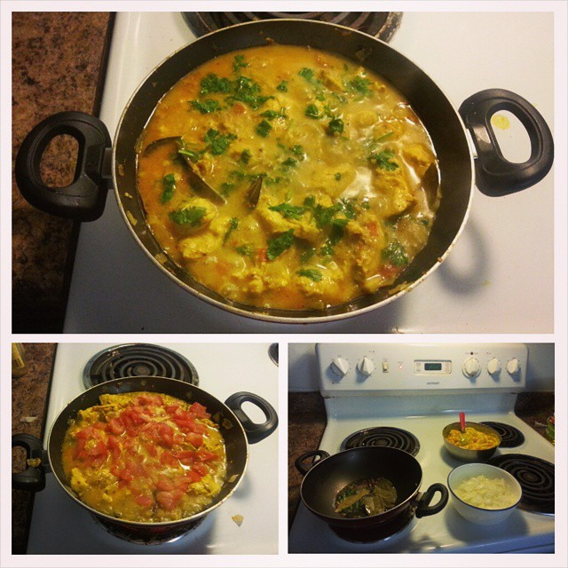